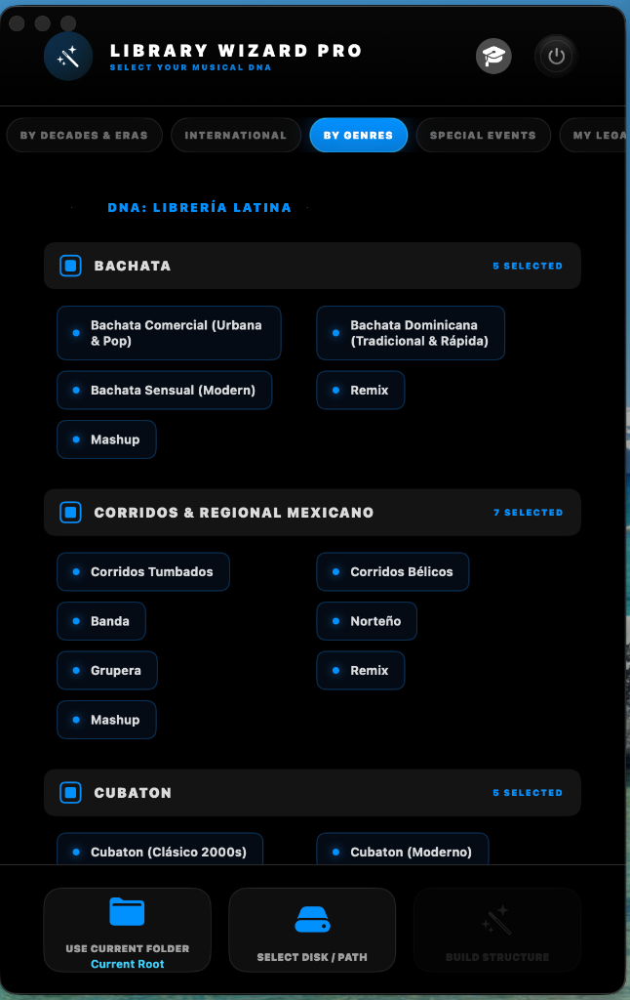

General Introduction – MDJPRO
Introduction
MDJPRO (Magic DJ Pro) is a professional platform for music management, auditing and organization designed for DJs, producers and event operators working under real industry standards.
Developed by Miami DJ Beat, MDJPRO is not a player, nor a simple file organizer. It is a music library control system created to protect, structure and optimize one of a professional DJ's most valuable assets: their music database.
In an environment where organization errors, corrupt metadata or incorrect scans can compromise a live performance, MDJPRO acts as an operational firewall between hard drive chaos and the stability required by softwares like Serato DJ, Rekordbox and VirtualDJ.
System Philosophy
MDJPRO is built on a fundamental principle:
"Professional music is not improvised. It is structured, validated, and protected."
For this reason, the application operates through controlled workflows, clear rules, and constant validations. Every action within the system—from loading a root folder to editing metadata—responds to a logic designed to prevent human errors, data loss, and progressive disorganization.
MDJPRO does not replace DJ software. It prepares it, feeds it correctly, and keeps it stable.
Who is MDJPRO for?
- Professional and resident DJs
- Mobile and special event DJs
- Music producers and curators
- DJ academies and schools
- Entertainment and event companies
- Users working with large, multi-device libraries
If your music is part of your professional identity and your livelihood, MDJPRO was designed for you.
What MDJPRO Solves
- Messy and hard-to-maintain libraries
- Incomplete, false or inconsistent metadata
- Scan errors in Serato or other software
- Path loss when moving disks or folders
- Lack of structure for events, sets and decades
- Risk of damaging the original database
The system introduces order, traceability and control without interfering with the DJ's creative flow.
Welcome to MDJPRO
The most advanced software engineering solution for intelligent music library management on macOS.
Your New Standard:
Designed for professional DJs and collectors who demand perfection in the organization of their metadata. MDJPRO does not just organize; it transforms your workflow through DNA algorithms and unprecedented automation.
How to use this manual
This manual has been designed as a technical and operational guide, not as promotional material. Here you will find clear explanations of each module, usage rules, critical warnings, recommended workflows, and professional best practices.
It is recommended to read the entire manual before using advanced functions, especially those that interact with folder structures and metadata.
© 2026 MDJPRO – Official Documentation.
1. SYSTEM REQUIREMENTS – MDJPRO
| COMPONENT | REQUIREMENT |
|---|---|
| Operating System | macOS 12 (Monterey) or higher. macOS 14 (Sonoma) Recommended. |
| Processor | Apple Silicon Only (M1, M2, M3, M4). Intel Macs NOT supported. |
| Memory (RAM) | 8 GB Minimum. 16 GB Recommended for large libraries (>50k songs). |
| Storage | SSD Required for hosting the library. |
| Supported Formats | MP3, AAC, WAV, AIFF, MP4, MOV. |
| DJ Software | Serato DJ Pro (100% Native). Compatible with Rekordbox and VirtualDJ. |
© 2026 MDJPRO – Official Documentation.
2. Installation – MDJPRO
MDJPRO_Installer.pkg file. The native Apple assistant will start to guide you
safely.
© 2026 MDJPRO – Official Documentation.
3. First Steps – MDJPRO
This section guides the user through the registration, activation, and license validation process. The activation architecture links your license to your Mac's unique Hardware ID to ensure your subscription's security.

© 2026 MDJPRO – Official Documentation.
4. User Interface – MDJPRO
INTERFACE ARCHITECTURE:
The Command Hub is the central operations interface. Its unified architecture allows for real-time command execution and status monitoring, eliminating navigation through deep menus.

Figure 4.1: Command Hub Overview
© 2026 MDJPRO – Official Documentation.
5. CONTROL PANEL – MDJPRO
Compatible with leading DJ software platforms
Native Integration: The system replicates the directory structure as Crates and Subcrates, maintaining the original hard drive hierarchy.
XML Bridge Protocol: Requires enabling 'rekordbox xml' in Preferences > View. Allows for structure importation via Drag & Drop.
Virtual Folders Support: The software recognizes the pre-analyzed database as an extension of the file system, optimizing read times.
© 2026 MDJPRO – Official Documentation.
© 2026 MDJPRO – Official Documentation.
6. Library and Organization 🔒 PREMIUM ONLY
LIBRARY WIZARD (Structure Manager): (Premium Subscription Only) Automation module that generates standardized directory hierarchies on the physical drive.

FOLDER SPECIFICATIONS (DNA)
Deployment Flow (Wizard Architecture)
Do not mix architectures without planning. Select a primary DNA for the 'Root' and use the others as sub-structures only if strictly necessary to avoid database fragmentation.
© 2026 MDJPRO – Official Documentation.
7. Editor Tag – MDJPRO
METADATA EDITOR (ID3):
Advanced tag management for library standardization. Changes are destructive and physically written to the asset to guarantee universal compatibility with DJ software.

© 2026 MDJPRO – Official Documentation.
8. Operative Mode – MDJPRO
MDJPRO library management is based on an atomic and sequential workflow. The Metadata Editor is the centerpiece where assets are refined before their final distribution.
Editor Anatomy
7 editing fields + Magic Emoji Cleaner. Allows normalizing Title, Artist, Album, and Comments.
Real-time metadata monitor: Cover Art, Absolute Path, Bitrate, Duration, and Key.
Track counters and active path monitor at the bottom of the editor.
Cover art viewer and MP4 video playback with touch scrubbing support.
Workflow Tools
© 2026 MDJPRO – Official Documentation.
9. Keyboard Shortcuts – MDJPRO
Optimize your workflow by using quick commands. These combinations allow you to execute critical actions without interrupting your mixing or editing session.
Essential Commands List
Constant use of shortcuts reduces library preparation time by 40%. It is recommended to memorize the navigation and saving commands.
© 2026 MDJPRO – Official Documentation.
10. Actions and Reports – MDJPRO
RESULTS PANEL:
The MDJPRO monitoring center provides a detailed report of the library status and system integrity after each scan or distribution operation.

• SHOW RESULTS: Detailed report of operation and error detection.
• RESET SYSTEM: Resets all parameters to factory state.
The system automatically omits system folders or hidden files to prevent macOS database corruption and integrity failures.
© 2026 MDJPRO – Official Documentation.
11. Visual Function Guide – MDJPRO
Quick reference of the main software interfaces. This ecosystem ensures a unified workflow from activation to final export.
Opening screen. Identifies your version and confirms your identity as an official user.

Subscription management, license activation, and Premium status verification.
Primary launchpad for Library Wizard, Tag Master, and Drive Management.
Real-time reports. View processed files, new additions, and integrity alerts.
Integrity control center. Manages status lights, Apple permissions (The Key), and Serato Link.
The metadata editor brain. ID3 standardization compatible with Serato and Rekordbox.
All interfaces use Apple's unified rendering engine to ensure sharpness on Retina displays and optimal performance.
© 2026 MDJPRO – Official Documentation.
12. File & Media Engine – MDJPRO
MDJPRO employs a 'Zero Trust' policy for multimedia files to prevent database corruption and ensure stability during live sessions.
Granular Column Control
| COLUMN | DESCRIPTION | EDITABLE? | RISK LEVEL |
|---|---|---|---|
| Filename | Physical name on the hard drive. | ✅ YES | MEDIUM |
| Title / Artist | Internal ID3 metadata of the asset. | ✅ YES | SAFE |
| Path | Absolute location in the system. | 🚫 NO | SYSTEM |
Renaming files that are already part of Serato Crates without using MDJPRO's "Serato Link" feature will result in Missing Files.
Eligible Formats Matrix
| FORMAT | STATUS | TECHNICAL SPECIFICATION |
|---|---|---|
| MP4 | ELIGIBLE | Standard MPEG-4 Part 14 container. |
| MOV | ELIGIBLE | Apple QuickTime Movie (Native macOS). |
| M4V | ELIGIBLE | iTunes / Apple Ecosystem Video. |
| MKV / AVI | BYPASS | Formats omitted for structural security. |
• EOF (End Of File) integrity validation.
• Structural metadata and offset consistency.
© 2026 MDJPRO – Official Documentation.
13. Security & Best Practices – MDJPRO
The integrity of your music library is our top priority. MDJPRO implements multiple security layers to ensure a stable and risk-free operation.
MDJPRO operates under secure isolation. External drive access requires **explicit authorization** via persistent security-scoped bookmarks (SSB).
Your SaaS credentials are stored in the encrypted macOS Keychain. On first launch, macOS will request **Touch ID or Password** to create a silent security context.
- ✔️ Active Write Permissions.
- ✔️ Path physically validated.
- ✔️ 1:1 Integrity Hash confirmed.
Golden Rules
Critical infrastructure recommended for MDJPRO Enterprise.
© 2026 MDJPRO – Official Documentation.
14. Troubleshooting – MDJPRO
Technical guide for incident resolution and standard terminology within the MDJPRO ecosystem.
Incident Resolution Guide
➜ Action: Run the **'Load Root'** function again to renew the SSB bookmark.
➜ Action: Use the **'Relocate'** feature in your DJ software or re-import the Master folder.
➜ Action: Re-encode to **H.264/AAC** using standard tools (e.g., Handbrake).
➜ Action: Check your internet connection and re-enter credentials in the **Account** panel.
Technical Glossary
ASSET: Individual media file unit (Audio/Video).
CRATE: Logical organization container specific to Serato DJ.
ID3 TAG: Industrial metadata standard embedded in files.
ROOT: Root directory or mount point for a data volume.
SANDBOX: Native macOS security mechanism for process isolation.
XML: Markup language used for database exchange.
© 2026 MDJPRO – Official Documentation.
15. Privacy & Legal Terms – MDJPRO
MDJPRO deeply respects user privacy. The software operates in a local environment, ensuring that control of information remains on your workstation.
Privacy Agreements
© 2024-2026 Miami DJ Beat LLC. All rights reserved. MDJPRO, the logo, and 'Library Wizard' are registered trademarks.
Miami DJ Beat LLC guarantees that it does not sell or transfer information to third parties. Access is restricted solely to authorized areas of the file system.
The system does not collect, index, or transmit the user's music content to external servers. All metadata is processed locally.
The software is provided 'as is'. The developer assumes no responsibility for data loss resulting from hardware failure or misuse.
© 2026 MDJPRO – Official Documentation.
16. Technical Support – MDJPRO
Miami DJ Beat LLC is committed to providing a stable and scalable operational infrastructure for all its professional users.
Direct Line
305-423-5814
Technical Support
Miamidjbeat@Soport.com
Schedule
Tel: Mon-Wed
1:00 PM - 5:00
PM
SMS: 24 Hours
Scope
Licenses and
Technical Infrastructure Errors
Response
Immediate communication
after account validation
• Recovery of files deleted by the user.
• Assistance for third-party software (Serato, Rekordbox, VDJ).
MDJPRO — MIAMI DJ BEAT LLC
© 2026. All rights reserved. Music Operations Technical Infrastructure.
SYSTEM VALIDATED BY ANTIGRAVITY AI ENGINE // TWIN PARITY ACHIEVED // REV 1.9.0
© 2026 MDJPRO – Official Documentation.